Code
import polars as pl
from polars import col
import seaborn as sns
from bossanova import model, compare, load_datasetSite Updates: Week 10 Slides
Eshin Jolly
February 24, 2026
In the previous notebooks we learned to fit GLMs and compare nested models using compare(). We asked: “Is this predictor worth adding?”
In this notebook we’ll go deeper and build intuitions for:
Throughout, we’ll frame inference as a signal-to-noise ratio: how large is our estimate relative to the uncertainty in that estimate?
\[ t = \frac{\hat{\beta}}{SE_{\hat{\beta}}} = \frac{\text{signal}}{\text{noise}} \]
We’ll use a dataset of advertisement spending on different types of media and the resulting sales:
| Variable | Description |
|---|---|
| tv | TV ad spending (in $1000s) |
| radio | Radio ad spending (in $1000s) |
| newspaper | Newspaper ad spending (in $1000s) |
| sales | Sales generated (in $1000s) |
Before building any model you should always plot your data first. This gives you a better idea of what your data looks like and informs the modeling choices you’ll make.
A pairplot shows the scatterplot between every pair of variables:
A correlation heatmap is another great way to summarize all pairwise relationships. We use .corr() in polars to compute pairwise correlations, then visualize with sns.heatmap:
Text(0.5, 1.0, 'Correlation Matrix')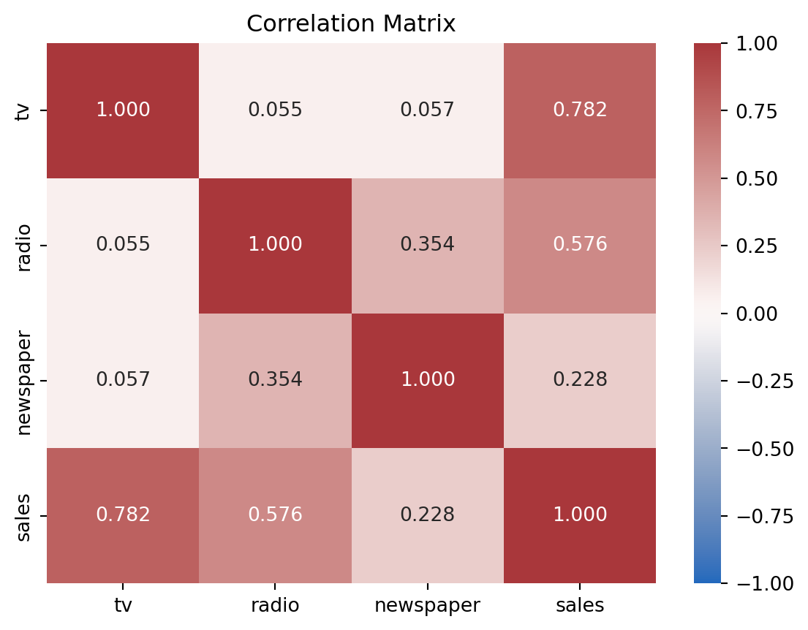
This tells us:
Another way we can look at these data is my mapping one of our continuous predictors to hue and size in a scatterplot. Since we’re interested in whether the addition of radio as a predictor changes our ability to predict sales, let’s put \(tv\) on the x-axis, \(sales\) on the y-axis, and \(radio\) on the hue.
Visualized this way it looks like the relationship between \(TV\) and \(sales\) might get steeper as \(radio\) increases.
The primary question we want to answer is:
Can we predict sales better when we consider radio ads in addition to TV ads?
We formalize this as a comparison between two nested models:
\[ \begin{align*} \text{Compact:} \quad sales_i &= \beta_0 + \beta_1 \cdot tv_i \\ \text{Augmented:} \quad sales_i &= \beta_0 + \beta_1 \cdot tv_i + \beta_2 \cdot radio_i \end{align*} \]
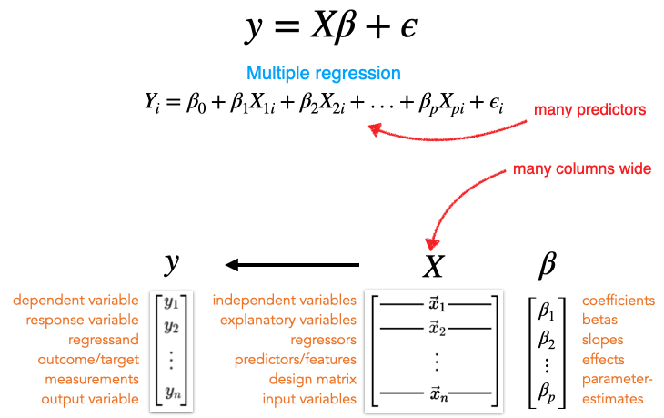
| model | PRE | F | rss | ss | df | df_resid | p_value |
|---|---|---|---|---|---|---|---|
| str | f64 | f64 | f64 | f64 | f64 | f64 | f64 |
| "sales ~ tv" | null | null | 2103.0 | null | null | 198.0 | null |
| "sales ~ tv + radio" | 0.7351 | 546.7 | 556.9 | 1546.0 | 1.0 | 197.0 | 1.1100e-16 |
The large F-statistic and PRE tell us: yes, adding radio is worth it!
The PRE (Proportional Reduction in Error) tells us how much additional variance radio explains beyond TV alone.
Now let’s evaluate how well our augmented model is doing overall.
Before interpreting our parameter estimates, we should check whether the model’s assumptions are reasonable. Recall the key assumptions:
bossanova provides a built-in 4-panel diagnostic plot via .plot_resid():
How to read these panels:
We can also inspect our model’s overall fit by plotting predicted vs. observed values and checking the .diagnostics table:
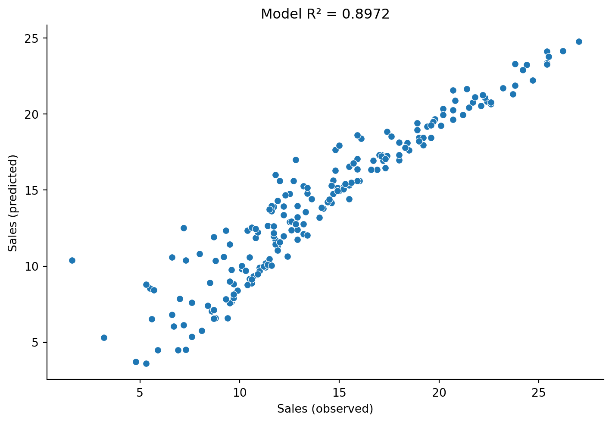
| df_model | df_resid | rsquared | rsquared_adj | fstatistic | fstatistic_pvalue | sigma | null_deviance | deviance | dispersion | mse | pseudo_rsquared | aic | bic | loglik |
|---|---|---|---|---|---|---|---|---|---|---|---|---|---|---|
| f64 | f64 | f64 | f64 | f64 | f64 | f64 | f64 | f64 | f64 | f64 | f64 | f64 | f64 | f64 |
| 2.0 | 197.0 | 0.8972 | 0.8962 | 859.6 | 2.2200e-16 | 1.681 | 5417.0 | 556.9 | 2.827 | 2.785 | 0.8972 | 780.4 | 793.6 | -386.2 |
Our \(R^2\) of ~0.90 tells us the model accounts for about 90% of the variance in sales. That’s strong. The residual diagnostics look reasonable — some slight non-normality in the tails, but nothing too concerning for now.
.infer()Now let’s move from model-level evaluation (does adding radio help?) to parameter-level inference (how certain are we in each estimate?).
After fitting, .params shows us the bare estimates:
| term | estimate |
|---|---|
| str | f64 |
| "Intercept" | 2.921 |
| "tv" | 0.04575 |
| "radio" | 0.188 |
These tell us what the model estimated, but not how certain we should be. When we call .infer() (which we already did when creating this model), bossanova computes standard errors, confidence intervals, t-statistics, and p-values.
| term | estimate | se | ci_lower | ci_upper | statistic | df | p_value |
|---|---|---|---|---|---|---|---|
| str | f64 | f64 | f64 | f64 | f64 | f64 | f64 |
| "Intercept" | 2.921 | 0.2945 | 2.34 | 3.502 | 9.919 | 197.0 | 2.2200e-16 |
| "tv" | 0.04575 | 0.00139 | 0.04301 | 0.0485 | 32.91 | 197.0 | 2.2200e-16 |
| "radio" | 0.188 | 0.00804 | 0.1721 | 0.2038 | 23.38 | 197.0 | 2.2200e-16 |
Let’s break down what each column means:
| Column | Meaning |
|---|---|
| estimate | Our best guess for \(\hat{\beta}\) — the estimated slope or intercept |
| se | Standard error — how much \(\hat{\beta}\) would vary across different samples |
| ci_lower | Lower range of the 95% confidence interval based on \(SE\) |
| ci_upper | Upper range of the 95% confidence interval based on \(SE\) |
| statistic | Signal-to-noise ratio: \(t = \hat{\beta} / SE\) |
| df | degrees-of-freedom (how many data points are free to vary based on what we estimated) |
| p_value | p-value — assuming no true effect, how surprising is this t? |
We can also method-chain .summary() to get an R-style summary:
Linear Model: sales ~ tv + radio
Residuals:
Min 1Q Median 3Q Max
-8.798 -0.875 0.242 1.171 2.833
Coefficients:
Estimate Std.Err [2.5% 97.5%] df t value Pr(>|t|)
Intercept 2.921 0.294 2.340 3.502 197 9.92 <2.2e-16 ***
tv 0.046 0.001 0.043 0.048 197 32.91 <2.2e-16 ***
radio 0.188 0.008 0.172 0.204 197 23.38 <2.2e-16 ***
---
Signif. codes: 0 '***' 0.001 '**' 0.01 '*' 0.05 '.' 0.1 ' ' 1
Correlation of Fixed Effects:
Interc tv
tv -0.659
radio -0.597 -0.055
Residual std error: 1.681 on 197 df
Multiple R-squared: 0.897, Adjusted R-squared: 0.896
AIC: 778.4, BIC: 788.3Here’s how we’d interpret the radio estimate in plain English:
For a given amount of TV advertising, an additional $1,000 spending on radio is associated with approximately 188 additional units in sales.
The $1,000 and 188 units come from the measurement scale of our variables — they’re in units of “$1000 of spending” so we shift by 3 decimal places to make it concrete.
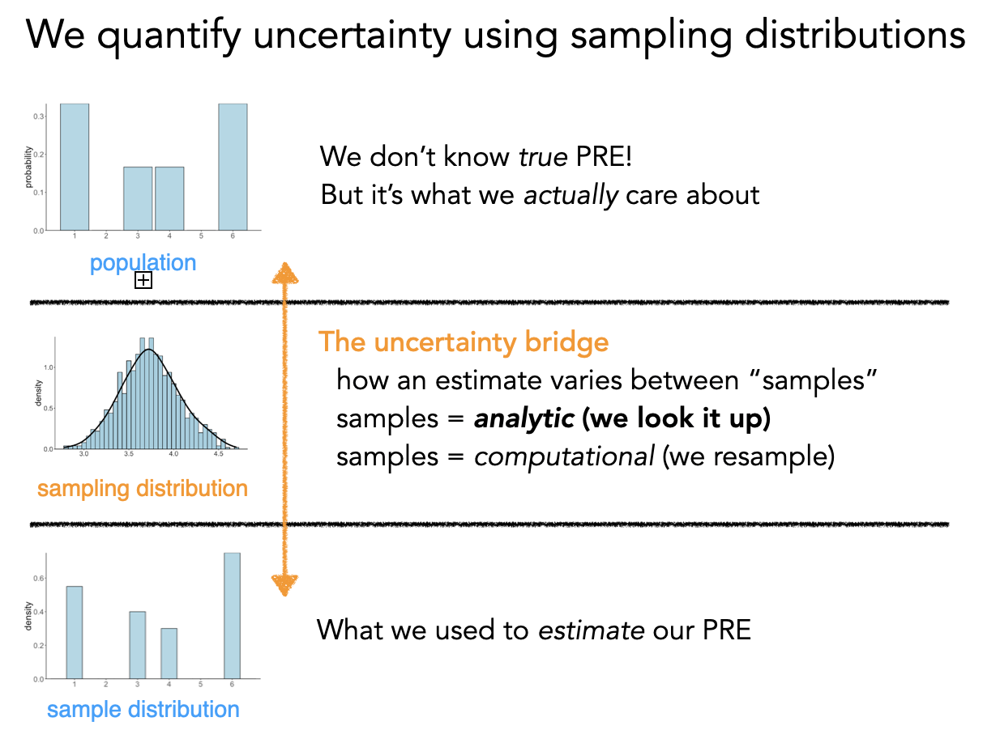
Remember: we’re trying to learn about a population from a single sample. Our estimates \(\hat{\beta}\) will change every time we collect a new sample. The standard error tells us how much we’d expect them to change — it’s the expected average deviation from the true population value.
The formula for \(SE_{\hat{\beta}}\) captures a fundamental trade-off:
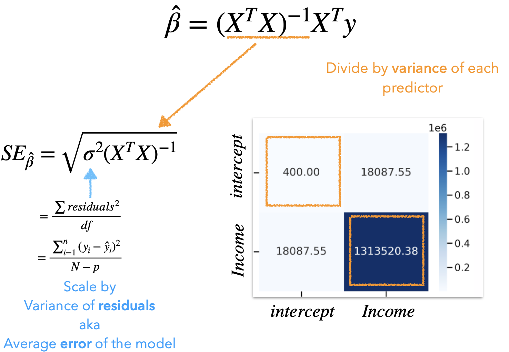
\[ SE_{\hat{\beta}} = \sqrt{\sigma^2 (X^T X)^{-1}} \]
Where \(\sigma^2\) is the average model error (MSE). The key insight is that our precision is approximately:
\[ SE \approx \frac{var(errors)}{\sqrt{DF_{error}}} \]
This tells us:
# Linear algebra library
import numpy as np
# Design matrix
X = augmented.designmat.to_numpy()
# Average model error - squared
sigma_squared = augmented.diagnostics.select('sigma').to_numpy() ** 2
# Square-root of the diagonal elements
np.sqrt(
np.diagonal(
# Average error * matrix "undo"
sigma_squared * np.linalg.inv(X.T @ X)
)
)array([0.29442646, 0.00139006, 0.00803825])This is the connection to model comparison: the reason we compare models with an accuracy-simplicity trade-off is because more parameters consume degrees of freedom, making each estimate less precise.
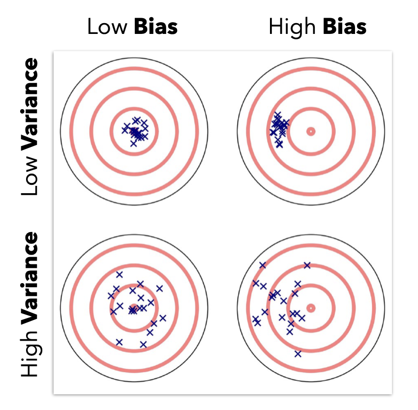
The t-statistic is the ratio of our estimate to its uncertainty:
\[ t = \frac{\hat{\beta}}{SE_{\hat{\beta}}} = \frac{\text{signal}}{\text{noise}} \]
| estimate |
|---|
| f64 |
| 9.918506 |
| 32.913669 |
| 23.383085 |
The larger the \(|t|\), the more confidence we have in the precision of \(\hat{\beta}\).
The p-value asks: assuming no true signal exists (\(\beta = 0\)), how likely am I to observe a signal-to-noise ratio as extreme as this \(t\)?
If we assume this ratio follows a t-distribution (which has fatter tails than a normal distribution, especially at smaller sample sizes), we can “look up” the p-value:
A 95% CI tells us: if we repeated this study many times, 95% of the resulting intervals would contain the true \(\beta\). It gives a range of plausible values, which is often more informative than a single p-value.
The process .infer() performs by default (called “asymptotic” or “parametric” inference):
This works well when:
If assumptions are violated, the assumed t-distribution may not be correct, and the p-values become unreliable. That’s where non-parametric alternatives come in (we’ll get to those later).
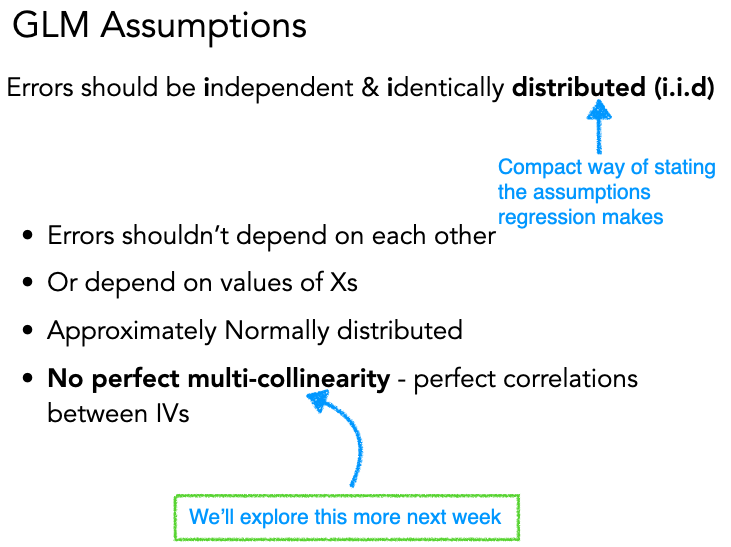
Previously we checked assumptions about the errors (iid: independent, identically distributed). Now let’s talk about an assumption about the predictors: that they aren’t too correlated with each other.
Multicollinearity occurs when predictors in a GLM are highly correlated. In the worst case — perfect correlation — we literally can’t tell the difference between how much each variable uniquely predicts \(y\)!
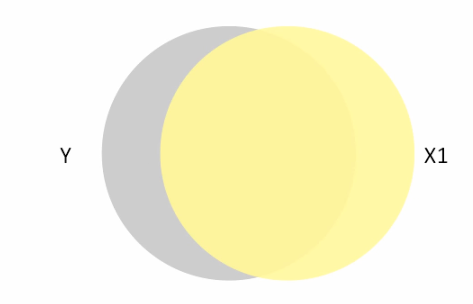
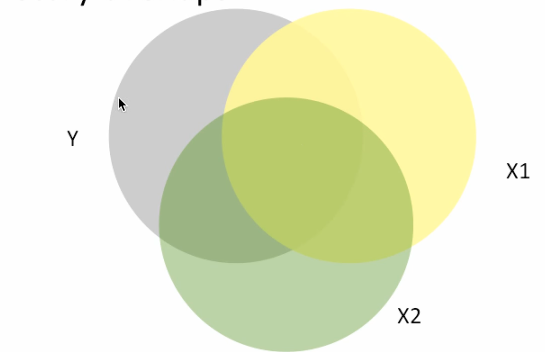
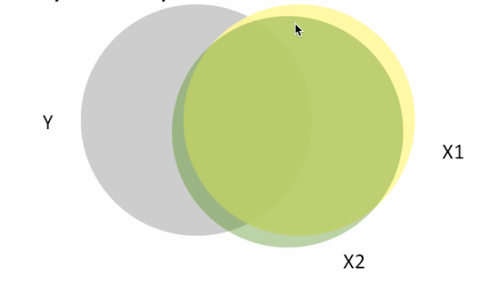
In these Venn diagrams, the overlap shows how much each predictor explains \(y\). In the rightmost figure, \(X_1\) and \(X_2\) overlap so much that including both is nearly redundant.
Here’s what this looks like with 3D regression planes. With uncorrelated predictors, the regression plane is stable across samples:
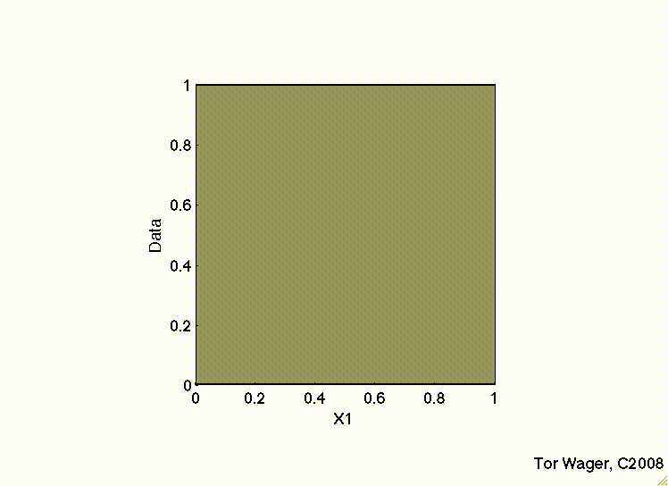
But with correlated predictors, the plane tips on a ridge and becomes unstable:
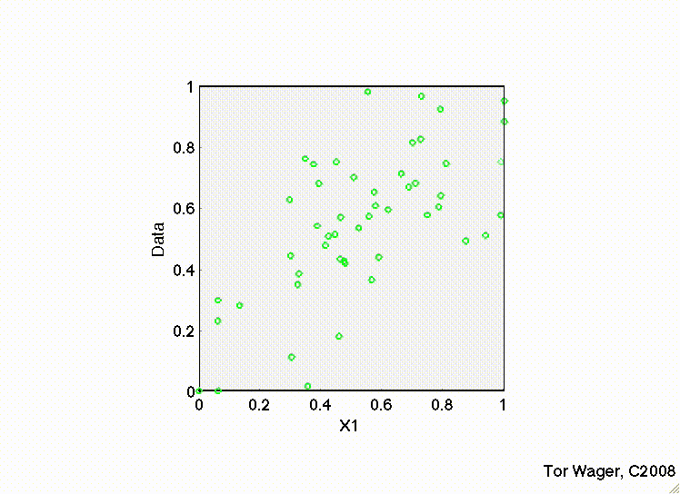
Multicollinearity has specific, predictable effects:
You can see this in the figure below — as collinearity between predictors increases, the estimates become more variable and the confidence intervals balloon:
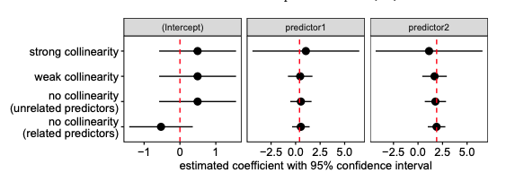
The Variance Inflation Factor (VIF) generalizes the idea of pairwise correlations to tell us how much each predictor is correlated with all other predictors:
\[ \text{VIF}_k = \frac{1}{1 - R^2_{(-k)}} \]
where \(R^2_{(-k)}\) is the R-squared you’d get if you used predictor \(X_k\) as the outcome and all other predictors as inputs. The square root of VIF tells you how much wider the confidence interval is compared to what you’d get with uncorrelated predictors.
Rule of thumb: VIF > 5 is a flag (it means CIs are 2.2x wider than they’d be with no collinearity). But this isn’t a hard rule — it depends on your goals.
Always use a model’s .vif() method to inspect this before you estimate parameters.
Let’s see it in action with an interaction model, where collinearity is especially common.
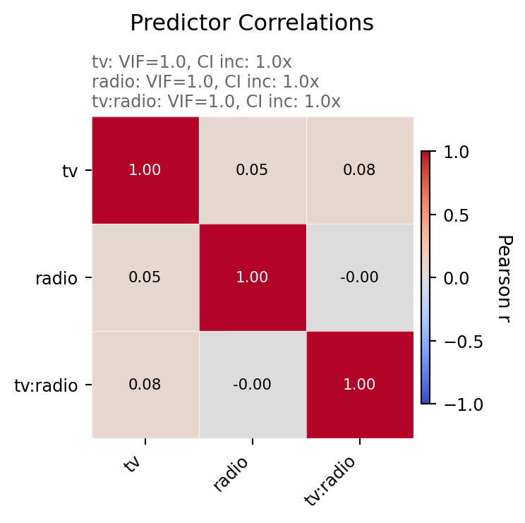
Look at the difference! Without centering, the interaction term tv:radio has a VIF near 7 — meaning its CI is ~2.6x wider than it needs to be. With centering, all VIFs drop to near 1.
Why? The product of two uncentered variables (\(tv \times radio\)) is naturally correlated with each variable individually — if either goes up, the product goes up. Centering removes this artificial correlation.
Centering doesn’t change the overall fit — \(R^2\) and predictions are identical. But notice how the individual parameter estimates differ:
| term | estimate |
|---|---|
| str | f64 |
| "Intercept" | 6.75 |
| "tv" | 0.0191 |
| "radio" | 0.02886 |
| "tv:radio" | 0.001086 |
| term | estimate |
|---|---|
| str | f64 |
| "Intercept" | 13.95 |
| "center(tv)" | 0.04438 |
| "center(radio)" | 0.1886 |
| "center(tv):center(radio)" | 0.001086 |
Notice:
tv:radio / center(tv):center(radio)) is the same — centering doesn’t change the interaction slopeKey insight: Centering is purely a reparameterization. The model is the same, but the interpretation and precision of individual parameters changes.
Common remedies:
If the collinearity is structural (e.g., height in cm and height in inches), just drop one. If it’s from interactions, centering or z-scoring usually fixes it.
In the centering example above, we used center() in the formula. bossanova also supports zscore(), which both centers and scales by the standard deviation.
zscore(tv) * zscore(radio) in the formula.vif() — how does it compare to the centered model?Parametric inference relies on assuming the shape of the sampling distribution (a t-distribution). But what if we’re not confident our assumptions hold?
We have two resampling-based alternatives:
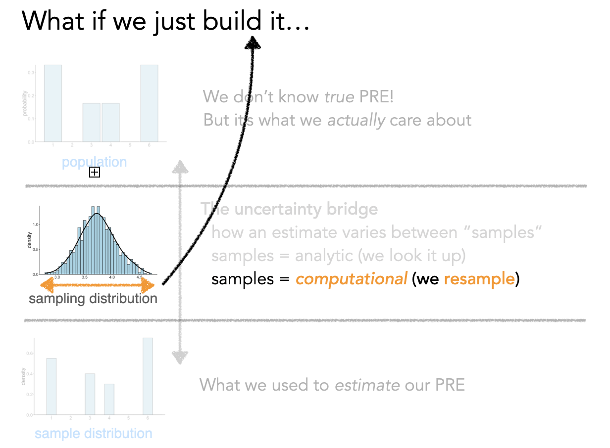
The idea: if we want to know how much \(\hat{\beta}\) would change across different samples, we can simulate different samples by resampling from our data with replacement.
Conceptually, this is what’s happening behind the scenes:
# PSEUDO-CODE — what bootstrapping looks like conceptually
boot_estimates = []
for i in range(1000):
# Create a "new" dataset by resampling rows with replacement
new_data = ads.sample(fraction=1.0, with_replacement=True)
# Fit the same model to this resampled data
boot_model = model('sales ~ tv + radio', new_data).fit()
# Save the parameter estimates
boot_estimates.append(boot_model.params)
# The spread of boot_estimates IS the sampling distribution
# Its standard deviation IS the standard errorBut bossanova makes this super easy for you using the how argument to .infer(). It offers the following options:
.infer(how='asymp'): default asymptotic assumption.infer(how='boot'): bootstrap (resampling with replacement)infer(how='perm'): permutation (shuffling)Let’s look at how bootstrapping affects the se and ci columns compared to the default approach:
| term | estimate | se | ci_lower | ci_upper | statistic | df | p_value |
|---|---|---|---|---|---|---|---|
| str | f64 | f64 | f64 | f64 | f64 | f64 | f64 |
| "Intercept" | 13.95 | 0.06682 | 13.82 | 14.08 | 208.7 | 196.0 | 2.2200e-16 |
| "center(tv)" | 0.04438 | 0.000783 | 0.04283 | 0.04592 | 56.67 | 196.0 | 2.2200e-16 |
| "center(radio)" | 0.1886 | 0.004512 | 0.1797 | 0.1975 | 41.81 | 196.0 | 2.2200e-16 |
| "center(tv):center(radio)" | 0.001086 | 0.000052 | 0.0009831 | 0.00119 | 20.73 | 196.0 | 2.2200e-16 |
| term | estimate | se | ci_lower | ci_upper | statistic | df | p_value |
|---|---|---|---|---|---|---|---|
| str | f64 | f64 | f64 | f64 | f64 | f64 | f64 |
| "Intercept" | 13.95 | 0.06777 | 13.79 | 14.06 | 205.8 | 1000.0 | 0.001998 |
| "center(tv)" | 0.04438 | 0.001105 | 0.04245 | 0.04688 | 40.18 | 1000.0 | 0.001998 |
| "center(radio)" | 0.1886 | 0.004807 | 0.1784 | 0.197 | 39.24 | 1000.0 | 0.001998 |
| "center(tv):center(radio)" | 0.001086 | 0.000073 | 0.0009549 | 0.001238 | 14.95 | 1000.0 | 0.001998 |
| term | estimate | se | ci_lower | ci_upper | statistic | df | p_value |
|---|---|---|---|---|---|---|---|
| str | f64 | f64 | f64 | f64 | f64 | f64 | f64 |
| "Intercept" | 13.95 | 0.06777 | 13.79 | 14.06 | 205.8 | 1000.0 | 0.001998 |
| "center(tv)" | 0.04438 | 0.001105 | 0.04245 | 0.04688 | 40.18 | 1000.0 | 0.001998 |
| "center(radio)" | 0.1886 | 0.004807 | 0.1784 | 0.197 | 39.24 | 1000.0 | 0.001998 |
| "center(tv):center(radio)" | 0.001086 | 0.000073 | 0.0009549 | 0.001238 | 14.95 | 1000.0 | 0.001998 |
Compare the bootstrap SEs to the parametric SEs — bootstrap SEs tend to be slightly larger and CIs slightly wider, because we’re making fewer distributional assumptions.
We can visualize the bootstrap distributions with .plot_resamples():
Each histogram shows how \(\hat{\beta}\) varied across 1000 bootstrap resamples. The width of each distribution IS the standard error, and the 2.5th/97.5th percentiles give us the confidence interval.
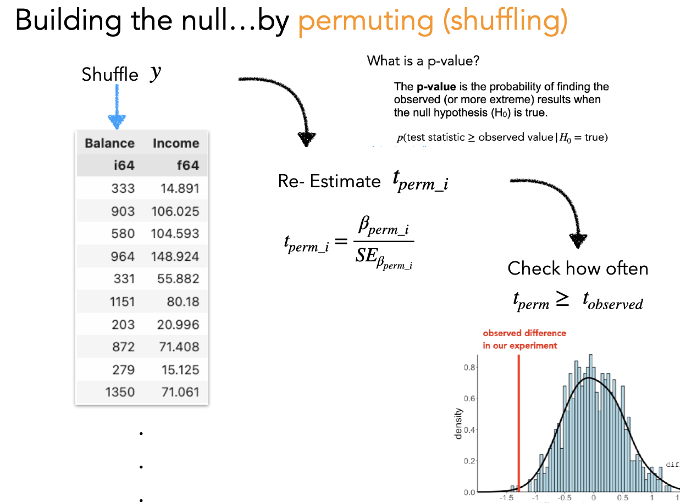
While bootstrapping answers “how uncertain are our estimates?”, permutation answers “what would we expect under the null hypothesis?”
The idea: shuffle the response variable (\(y\)) to break its relationship with the predictors, then refit the model. Do this many times to build up a distribution of t-statistics you’d expect if there were no true relationship.
# PSEUDO-CODE — what permutation looks like conceptually
perm_tstats = []
for i in range(1000):
# Shuffle ONLY the response variable — break the y ~ X relationship
shuffled_data = ads.with_columns(
ads['sales'].sample(fraction=1.0, shuffle=True).alias('sales')
)
# Fit the same model to shuffled data
perm_model = model('sales ~ tv + radio', shuffled_data).fit().infer()
# Save the t-statistics
perm_tstats.append(perm_model.params['statistic'])
# The p-value = proportion of permuted |t| >= observed |t|Again, bossanova handles this with .infer("perm"):
In this case lets look at how the default p_value column changes compared to permutation testing:
| term | estimate | p_value |
|---|---|---|
| str | f64 | f64 |
| "Intercept" | 13.95 | 2.2200e-16 |
| "center(tv)" | 0.04438 | 2.2200e-16 |
| "center(radio)" | 0.1886 | 2.2200e-16 |
| "center(tv):center(radio)" | 0.001086 | 2.2200e-16 |
| term | estimate | p_value |
|---|---|---|
| str | f64 | f64 |
| "Intercept" | 13.95 | 1.0 |
| "center(tv)" | 0.04438 | 0.000999 |
| "center(radio)" | 0.1886 | 0.000999 |
| "center(tv):center(radio)" | 0.001086 | 0.000999 |
Notice that the smallest possible p-value is determined by the number of permutation tests we run. In this case because the estimates are very reliable the observed statistics are more extreme than all permuted samples (1000), reflect in the following formula:
\[\frac{1}{1000} = 0.001\]
In practice for stability we add 1 to both the denominator and numerator to avoid division errors:
\[\frac{2}{1001} = 0.000999\]
Regardless of which inference method you use, it’s critical to understand:
Statistical significance is about signal detection, not importance.
The standard error (and hence t and p) depends on:
As your sample size grows, every non-zero effect becomes “statistically significant” — but how much data you collected has nothing to do with whether the effect matters in the real world.
From The Truth About Linear Regression:
The most important variables are not those with the largest-magnitude t statistics or smallest p-values. Statistical significance is always about what “signals” can be picked out clearly from background noise.
Bottom line: Always pair statistical inference with practical interpretation. A “significant” coefficient of 0.001 might be meaningless in your domain, while a “non-significant” coefficient of 5.0 might be practically important but estimated with too much noise.
Now we want to know whether spending on newspaper ads is a worthwhile addition to our model that already includes TV and radio.
sns.lmplot or sns.heatmap to visualize the relationships between newspaper and the other variables (sales, tv, radio)compare() to test whether adding newspaper is worth it.infer().summary() on the best fitting modelYour results write-up here…